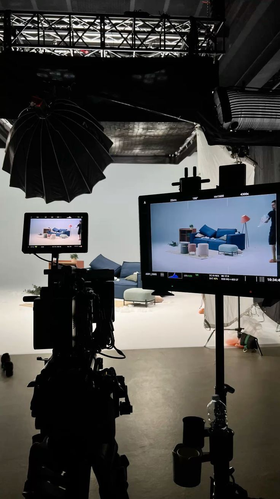
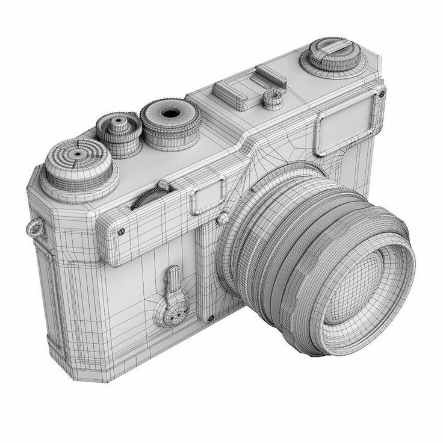
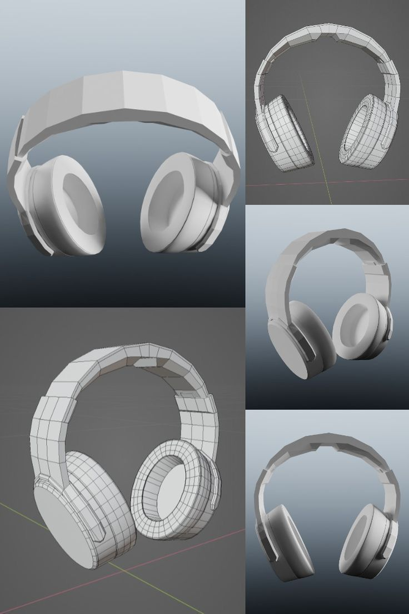
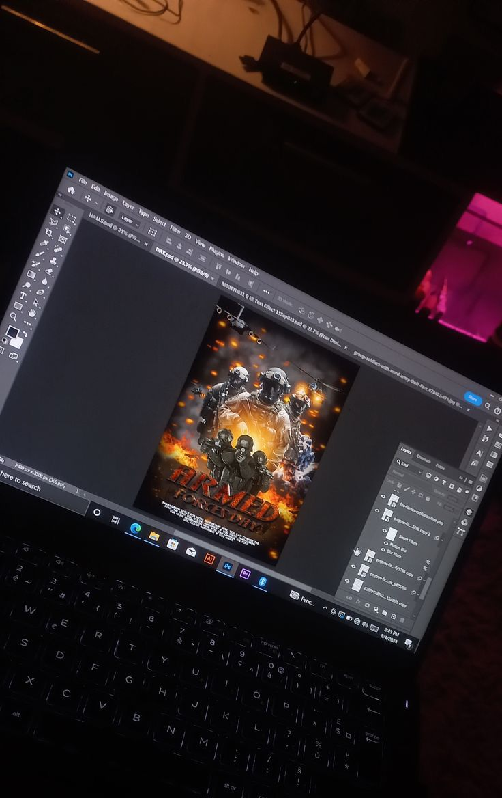

¡Bienvenidos!
PRONET MEDIA GROUP, empresa dedicada a la producción audiovisual, eventos y experiencias inmersivas con tecnología de última generación.

PRONET MEDIA GROUP, empresa dedicada a la producción audiovisual, eventos y experiencias inmersivas con tecnología de última generación.
PRONET MEDIA GROUP es una empresa dedicada a la creación de eventos temáticos inmersivos y producción audiovisual, enfocada en transformar ideas en experiencias únicas e innovadoras.
Nos especializamos en integrar planificación estratégica, diseño multimedia y visualización 3D para desarrollar proyectos que combinan creatividad, tecnología y organización profesional. Cada propuesta es pensada para impactar, conectar con el público y dejar una huella memorable.
Nuestra empresa nace con el propósito de redefinir la forma en que se viven los eventos, apostando por soluciones modernas y dinámicas que van más allá de lo convencional.
Creemos que cada evento es una oportunidad para contar una historia. Por eso, trabajamos con un enfoque creativo y tecnológico que nos permite diseñar experiencias auténticas, donde cada detalle tiene un propósito.
Crear experiencias innovadoras a través de la producción audiovisual y eventos temáticos, integrando tecnología y creatividad para superar las expectativas del público.
Ser una empresa líder en la creación de experiencias inmersivas, reconocida por su innovación, calidad y capacidad de transformar ideas en espectáculos memorables.
En PRONET MEDIA GROUP ofrecemos soluciones integrales que combinan creatividad, tecnología y producción para transformar ideas en experiencias únicas.


Creamos contenido visual de alto impacto que comunica ideas de forma clara y atractiva. Desde la conceptualización hasta la edición final, desarrollamos piezas audiovisuales que elevan la calidad de cada proyecto.


Diseñamos, planificamos y ejecutamos eventos temáticos e inmersivos. Nos encargamos de cada detalle para garantizar una experiencia organizada, innovadora y memorable.
En el área de multimedia trabajamos con herramientas digitales que nos permiten diseñar, visualizar y perfeccionar cada proyecto antes de su ejecución. Utilizamos aplicaciones especializadas como:


Con Blender desarrollamos representaciones tridimensionales que nos permiten visualizar cómo será el evento antes de que ocurra. Diseñamos escenarios, espacios y montajes en 3D para anticipar cada detalle, optimizar recursos y asegurar una ejecución más eficiente y profesional.

Con Photoshop creamos y editamos piezas visuales que complementan la identidad de cada proyecto. Desde banners y material promocional hasta retoques visuales, esta herramienta nos permite cuidar la estética, reforzar la comunicación y mantener una imagen coherente en cada experiencia.
Todo esto para garantizar resultados creativos, precisos y alineados con la idea del cliente.
Email: pronetmediagroup@gmail.com
redes sociales: Instagram whatsApp Tiktok
Direccion: Independencia #200, Santo Domingo, República Dominicana.